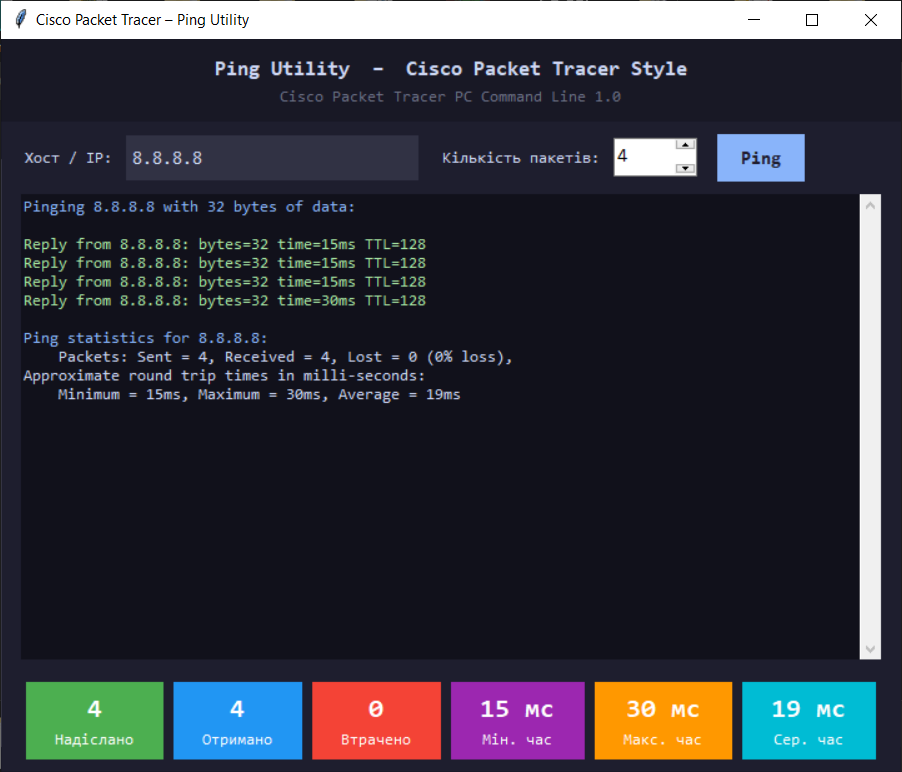

Про програму
Програма реалізує утиліту ping мовою Python, яка імітує поведінку команди
ping у середовищі Cisco Packet Tracer.
Доступна у консольному (CLI) та графічному (GUI) варіантах. Працює на Windows, Linux та macOS.
Що таке ping?
Ping – мережева утиліта для перевірки доступності хоста. Надсилає пакети ICMP Echo Request та очікує ICMP Echo Reply. За часом відповіді визначається затримка (RTT) у мілісекундах.
C:\>ping 192.168.0.3 Pinging 192.168.0.3 with 32 bytes of data: Reply from 192.168.0.3: bytes=32 time=4ms TTL=128 Reply from 192.168.0.3: bytes=32 time<1ms TTL=128 Reply from 192.168.0.3: bytes=32 time<1ms TTL=128 Reply from 192.168.0.3: bytes=32 time<1ms TTL=128 Ping statistics for 192.168.0.3: Packets: Sent = 4, Received = 4, Lost = 0 (0% loss), Approximate round trip times in milli-seconds: Minimum = 0ms, Maximum = 4ms, Average = 1ms
Використані бібліотеки
Усі бібліотеки є стандартними – pip не потрібен.
subprocess
Запускає системну команду ping та зчитує її вивід.
re
Регулярні вирази для парсингу часу відповіді (time=Xms).
threading
Виконує ping у окремому потоці — GUI не блокується.
tkinter
GUI-бібліотека Python. Темний інтерфейс, кольоровий вивід, картки.
platform
Визначає поточну ОС для вибору параметрів команди ping.
sys
Зчитує аргументи командного рядка для CLI-версії.
CLI-версія (ping_cli.py)
Консольна версія відтворює точний формат виводу Cisco Packet Tracer. Підтримує аргументи та інтерактивний режим.
python ping_cli.py Cisco Packet Tracer PC Command Line 1.0 C:\>ping 127.0.0.1 Pinging 127.0.0.1 with 32 bytes of data: Reply from 127.0.0.1: bytes=32 time<1ms TTL=128 Reply from 127.0.0.1: bytes=32 time<1ms TTL=128 Reply from 127.0.0.1: bytes=32 time<1ms TTL=128 Reply from 127.0.0.1: bytes=32 time<1ms TTL=128 Ping statistics for 127.0.0.1: Packets: Sent = 4, Received = 4, Lost = 0 (0% loss), Approximate round trip times in milli-seconds: Minimum = 0ms, Maximum = 0ms, Average = 0ms
Скриншот CLI

Алгоритм роботи
| Крок | Дія |
|---|---|
| 1 | Визначити ОС через platform.system() |
| 2 | Скласти команду: ping -n 4 (Win) або ping -c 4 (Unix) |
| 3 | Запустити через subprocess.Popen і зчитати stdout рядково |
| 4 | Розпарсити кожен рядок: час відповіді, статус |
| 5 | Вивести статистику: Sent / Received / Lost, Min/Max/Avg |
GUI-версія (ping_gui.py)
Графічна версія на tkinter. Темна тема Catppuccin Mocha, кольоровий вивід, картки статистики.
Потоки
Пінгування у окремому потоці — GUI не блокується під час роботи.
Кольоровий вивід
Відповіді – зеленим, таймаути – червоним, заголовки – синім.
Картки статистики
6 карток: Надіслано, Отримано, Втрачено, Мін/Макс/Сер часу.
Enter для пінгу
Натискання Enter запускає пінгування без кліку мишею.
Скриншот GUI
